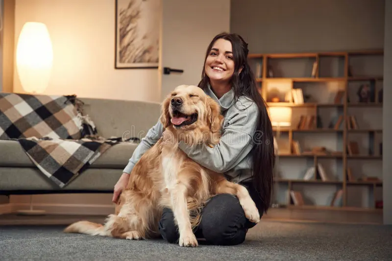
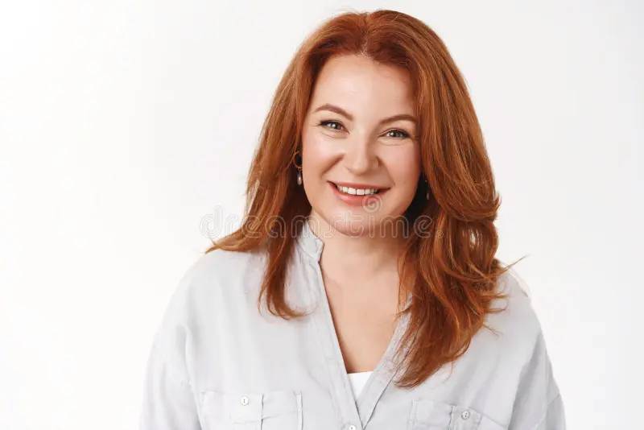

"Em 1998, um filhote de Golden Retriever encharcado e abandonado chegou até a família Andrade, e mudou tudo."
O que começou com um simples ato de amor, batizado de Mel, foi crescendo naturalmente ao longo dos anos. A casa virou refúgio, a garagem virou clínica, e o quintal onde Mel correu por anos se transformou no lar do PetShop. Fundado em 2009 por Thiago e Camila Andrade, veterinário e zootecnista criados entre animais, o petshop nasceu da mesma filosofia que sempre guiou a família: cuidar com amor primeiro, e o resto vem depois. Os petiscos artesanais da Dona Helena, a atenção individual de cada atendimento e os Goldens que até hoje recebem os clientes na entrada são a prova de que essa essência nunca mudou. Mel se foi em 2011, mas deixou um legado que pulsa em cada detalhe deste lugar. Aqui, seu pet não é um número, é família!
Thiago, Camila e Helena Andrade - a família por trás do PetShop
Thiago, veterinário apaixonado por animais desde criança, é o coração clínico do PetShop. Com uma abordagem cuidadosa e personalizada, ele garante que cada pet receba o melhor atendimento possível. Camila, zootecnista e amante dos pets, é a mente criativa por trás dos produtos artesanais e das promoções especiais. Já Helena, a matriarca da família, é a alma do negócio, responsável pelos petiscos caseiros que conquistaram o paladar de muitos clientes. Juntos, eles formam uma equipe dedicada a oferecer amor e cuidado em cada serviço prestado.



Camila de Andrade
Thiago de Andrade
Helena de Andrade